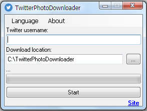

Twitter Photo downloader
Download all photo of a user from media page.
Using Internet Explorer. Min version of IE: 8 .
Requires .NET Framework 4 or higher.
Скачивает все фото пользователя с медиа страницы.
Используется Internet Explorer. Минимальная версия IE: 8 .
Для работы требуется .NET Framework 4 или выше.
